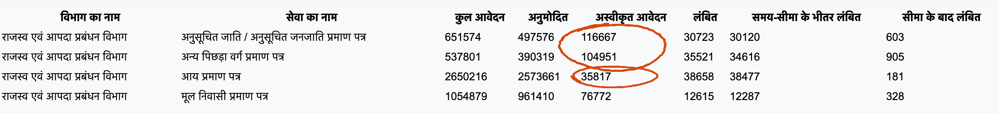
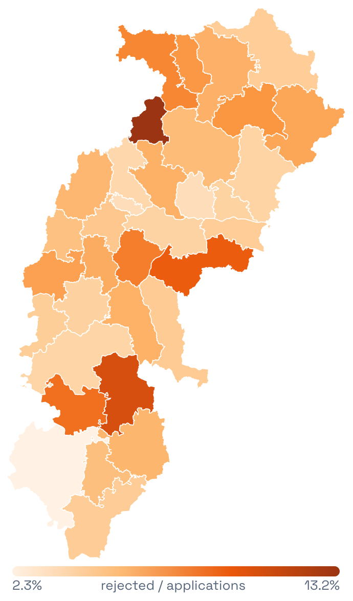
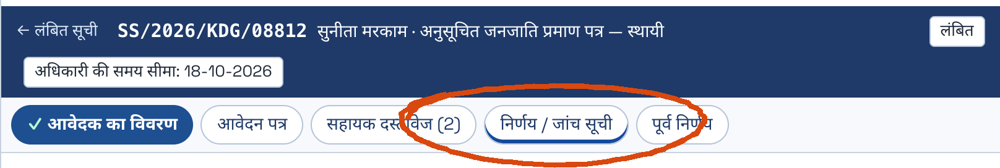
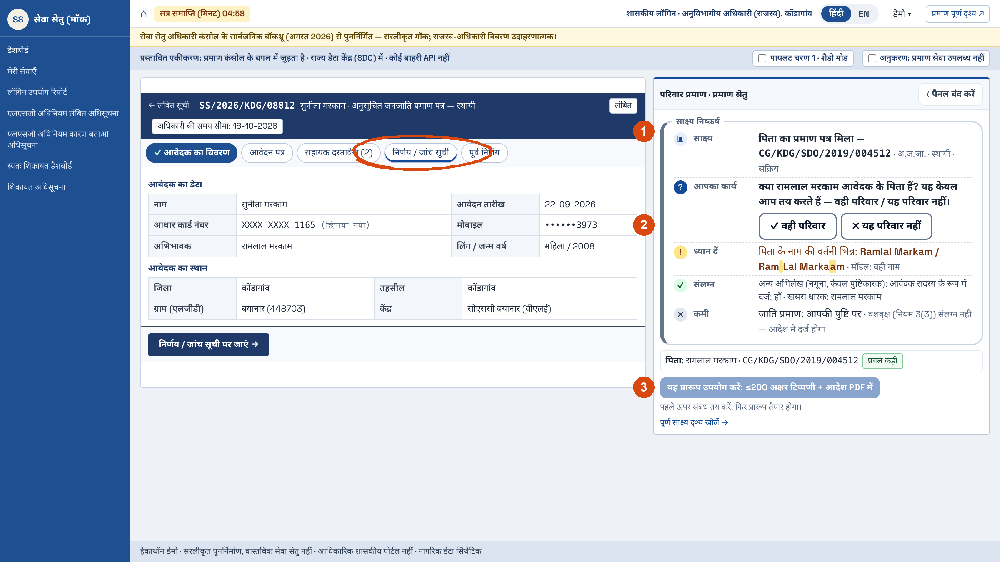
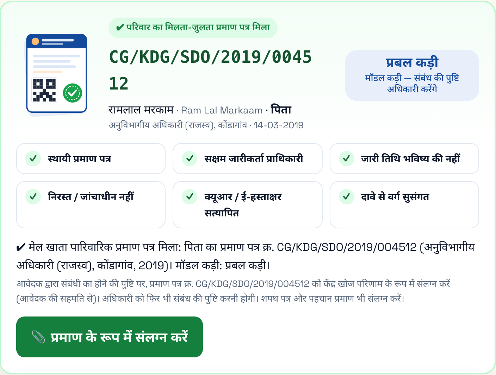
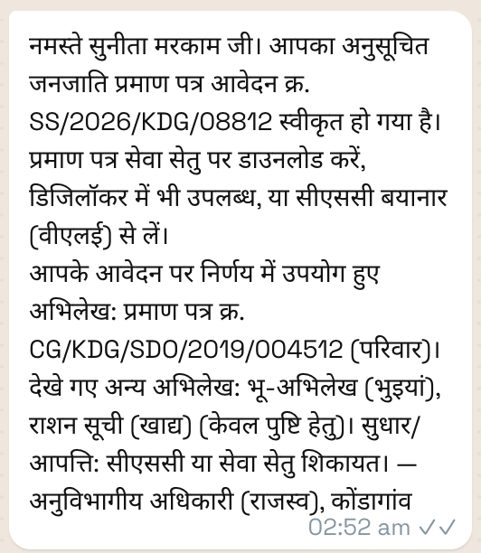
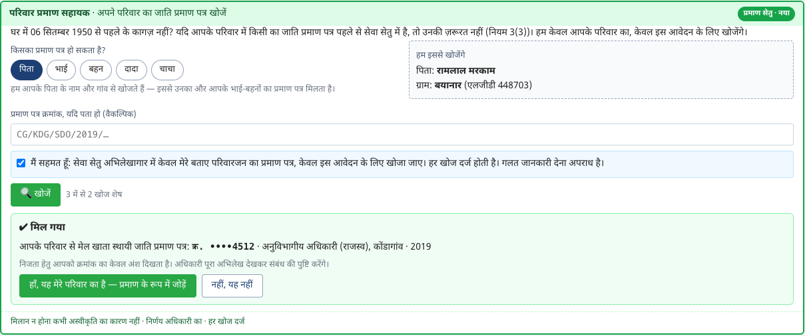

प्रमाण सेतु · Praman Setu
रामलाल मरकाम · Ramlal Markam
Ram Lal Markaam · CG/KDG/SDO/2019/004512
एक ही व्यक्ति। उनका प्रमाण पत्र सेवा सेतु में है। अधिकारी उसे खोज नहीं सकते।
The same man. His certificate is in Sewa Setu. The officer has no way to find it.
Team Insiders · Gaurav Singh, Aditya Tiwari · Sewa Setu Innovation Hackathon, Problem Statement 1 · 28 September 2026
1 · cover — (25 s, speaker A, open in Hindi) नमस्ते। ये दो नाम एक ही व्यक्ति के हैं, सुनीता के पिता। सेवा सेतु ने 2019 में इन्हें अनुसूचित जनजाति का प्रमाण पत्र दिया था। This week Sunita applied for hers, and the officer has no way to find her father's certificate. On your own MIS, caste certificates are a fifth of the applications and three-fifths of the rejections. We are Team Insiders, and we built the missing lookup.
What Sewa Setu and other states already have, so we did not rebuild it
सेवा सेतु में पहले से · Already in Sewa Setu
✓ 907 सेवाएँ
✓ आधार eKYC
✓ डिजीलॉकर
✓ 16,611 केंद्र
✓ WhatsApp पर 25 सेवाएँ
✓ QR ई-हस्ताक्षरित प्रमाण पत्र
✓ DSC हस्ताक्षर
✓ समय-सीमा पर स्वतः अर्थदंड
✓ सार्वजनिक MIS
✓ 95.7% समय पर
| क्षमता · Capability | कौन आगे है · Who leads | छत्तीसगढ़ आज · CG today | हमारा निर्णय · Our choice |
|---|---|---|---|
| WhatsApp पर सेवाएँ | आंध्र 1,126 · तेलंगाना 580+ · महाराष्ट्र 500+ | 25 सेवाएँ | नहीं बनाया: पहले से है, बढ़ाना आसान |
| परिवार रजिस्ट्री | कर्नाटक कुटुंब · हरियाणा परिवार पहचान · राजस्थान जन आधार | रजिस्ट्री नहीं, पर प्रमाण पत्र अभिलेखागार है | इसी अभिलेखागार को साक्ष्य बनाया |
| समय-सीमा पर स्वतः अपील | हरियाणा ऑटो अपील · गुजरात स्वागत 2.0 | स्वतः शिकायत व अर्थदंड | नहीं बनाया: पहले से है |
| AI शिकायत निवारण · घर तक सेवा | आंध्र AI4PGRS · पंजाब 437 सेवाएँ | शिकायत पैनल · 16,611 केंद्र | हमारा फ़ोकस नहीं |
| निर्णय के समय AI साक्ष्य | कहीं पूरा नहीं (आंध्र, कर्नाटक आंशिक) | जांच सूची टैब खाली | यही हमारा काम |
WhatsApp, चैटबॉट और रजिस्ट्री पहले से हैं। प्रमाण पत्र के निर्णय की मेज़ पर साक्ष्य, कोई नहीं दे रहा।
Chatbots, WhatsApp and registries exist. Evidence at the certificate officer's desk is the gap no one has filled.
स्रोत: सेवा सेतु पोर्टल व MIS (27-09-2026), अधिकारी कंसोल वॉकथ्रू (अगस्त 2026), राज्य पोर्टल व ऑडिट रिपोर्ट · 2
2 · states — (50 s, A) Before showing anything we built: what already exists. Sewa Setu already has 907 services, eKYC, DigiLocker, WhatsApp for 25 services, QR e-signed certificates, DSC signing, auto-penalty and a public MIS. Other states lead on WhatsApp scale, family registries and auto-appeal, which took years and laws. So we rebuilt none of it: no chatbot, no new portal. The one gap nobody has filled for certificates is evidence at the officer's desk, and Chhattisgarh does not need a new registry for it, because its certificate archive already is one.
Caste certificates: 22% of applications, 61% of rejections. Straight from Sewa Setu's own service-wise table.

अ.जा./अ.ज.जा.: 19.0% अस्वीकृत · 6,51,574 में से 1,16,667
SC/ST: about 1 in 5 decided applications rejected
अन्य पिछड़ा वर्ग: 21.2% अस्वीकृत · 5,37,801 में से 1,04,951
OBC: slightly higher still
मूल निवास: 7.4% अस्वीकृत · 10,54,879 में से 76,772
Domicile
आय: केवल 1.4% अस्वीकृत · 26,50,216 में से 35,817
Income: half of all applications, almost never rejected
circled on Sewa Setu's own table

एक ही नियम, जिलों में अस्वीकृति 2.3% से 13.2%
स्रोत: sewasetu.cgstate.gov.in, Service-Wise Report (RankingOfServices), 29-09-2026; 1 अप्रैल 2025 से संचयी। दरें निर्णीत आवेदनों पर (approved + rejected). · 3
3 · where — (50 s, A) This is Sewa Setu's own service-wise table, not our chart. Look at the rejected column. SC/ST: 1.17 lakh rejected out of 6.5 lakh, about one in five decided. OBC: 1.05 lakh out of 5.4 lakh. Income: half of all applications, and only 36 thousand rejected. Together, caste certificates are 22% of applications and 61% of all rejections. That is why we focused here. Across districts, the same rules give 2.3% to 13.2%.
Where the data comes from: every number traces to a government body; no real citizen's personal data was used
| डेटा · Data | सरकारी स्रोत · Government body | उपयोग · Used for | प्रकार · Type |
|---|---|---|---|
| सेवा सेतु MIS: सेवा-वार व जिला-वार आवेदन, अस्वीकृति | CHiPS, इलेक्ट्रॉनिकी एवं IT विभाग, छ.ग. शासन | समस्या का आकार, जिला मानचित्र | ✓ असली |
| LGD कोड: 33 जिले, 234 तहसील, 20,753 गांव | पंचायती राज मंत्रालय, भारत सरकार (Local Government Directory) | गांव के नाम एक समान, खोज सीमित | ✓ असली |
| जनगणना 2011: जिला जनसंख्या, SC/ST % | महारजिस्ट्रार व जनगणना आयुक्त, गृह मंत्रालय | जिलों की तुलना | ✓ असली |
| अधिनियम व नियम 2013 | छत्तीसगढ़ शासन (India Code) | नियम जांच, आदेश का प्रारूप | ✓ असली |
| उच्च न्यायालय के आदेश, जुलाई 2026 | छत्तीसगढ़ उच्च न्यायालय, बिलासपुर | सक्षम प्राधिकारी, रिश्तेदार का प्रमाण पत्र | ✓ असली |
| API Setu (edistrictcg), डिजीलॉकर | इलेक्ट्रॉनिकी एवं IT मंत्रालय (MeitY), NeGD | सत्यापन का ढांचा | ✓ असली विनिर्देश |
| मनरेगा मज़दूरी दर ₹261 / दिन | ग्रामीण विकास मंत्रालय, भारत सरकार | नागरिक की लागत का अनुमान | ✓ असली |
| भुइयां भूमि अभिलेख, खाद्य राशन कार्ड | राजस्व विभाग व खाद्य विभाग, NIC | चरण 2, राजस्व आदेश के बाद | नमूना |
| नागरिक व प्रमाण पत्र अभिलेख (17,569 लोग) | हमारे द्वारा बनाए गए | मॉडल का परीक्षण | कृत्रिम |
आंकड़े सरकार के अपने, नागरिक कृत्रिम: इसलिए पायलट से पहले किसी की निजता पर कोई जोखिम नहीं।
sewasetu.cgstate.gov.in · lgdirectory.gov.in · censusindia.gov.in · indiacode.nic.in · apisetu.gov.in · nrega.nic.in · देखे गए 27–29 सितंबर 2026 · 4
4 · sources — (30 s, B) Every number in this deck comes from a government body. Rejection figures from Sewa Setu's own MIS, run by CHiPS. Village codes from the Local Government Directory of the Ministry of Panchayati Raj: 20,753 villages. Census 2011 for districts. The 2013 Act and the High Court's July orders for the rules. API Setu and DigiLocker from MeitY for the verification design. Only the citizens are synthetic, on purpose, so no one's privacy is touched before a pilot.
Both sides of the counter: the applicant and the officer who approves
आवेदक की ओर से
The applicant's side · एक आवेदक की माँ, कोंडागांव
“हमारे पास 1950 का कागज़ नहीं है। जेठ का प्रमाण पत्र सेवा सेतु में है, पर केंद्र वाले भैया बोले: 1950 वाला लगाओ, नहीं तो रिजेक्ट।”
“We have no 1950 paper. My brother-in-law's certificate is in Sewa Setu, but the Kendra said: attach the 1950 paper, or it gets rejected.”
• एक अस्वीकृति = 1–2 दिन की मज़दूरी (₹261/दिन), दोबारा शुल्क, 3 सप्ताह
One rejection: 1–2 days of wages, a second fee, three more weeks
• कारण एक पंक्ति का, जो घर में कोई समझ न सके
A one-line reason nobody at home can understand
• छात्रवृत्ति की तारीख छूटने का डर
The scholarship deadline may be missed
मंज़ूरी देने वाले अधिकारी की ओर से
The officer who approves · SDO (राजस्व), 9 वर्ष सेवा
“मैं वही देखता हूँ जो केंद्र ने अपलोड किया। बहन का प्रमाण पत्र आर्काइव में हो, तो भी मुझे पता नहीं चलता। और गलत प्रमाण पत्र पर दस्तखत हुए, तो ज़िम्मेदार मैं।”
“I see only what the Kendra uploaded. Even if the sister's certificate is in the archive, I cannot know. And if I sign a false one, I am answerable.”
• दिन में लगभग 60 फ़ाइलें; एक जाति फ़ाइल को 5 मिनट चाहिए, मिलते 2.5–4
About 60 files a day; a caste file needs 5 minutes, gets 2.5 to 4
• धारा 12: जानबूझकर गलत प्रमाण पत्र देने पर अधिकारी पर भी दंड
Section 12: the officer is liable for knowingly issuing a false certificate
• जांचे गए 659 में से 267 जाति प्रमाण पत्र फ़र्ज़ी पाए गए (GAD, अगस्त 2026)
267 of 659 investigated caste certificates were fake (GAD, Aug 2026)
दोनों एक ही चीज़ ढूंढ रहे हैं: परिवार का प्रमाण, जो पहले से सेवा सेतु में है।
Both are looking for the same thing: the family's proof, already inside Sewa Setu.
उद्धरण: हमारे शोध के संयुक्त पात्र (composite personas), असली व्यक्ति नहीं · तथ्य: छ.ग. अधिनियम 2013 धारा 12; GAD, अगस्त 2026; मनरेगा दर · 5
5 · voices — (40 s, A) Before the numbers become a story, the two people at the counter. On one side, a mother whose daughter needs an ST certificate. There is no 1950 paper at home, a relative's certificate is already in Sewa Setu, and one rejection costs two days' wages, a second fee and maybe the scholarship. On the other side, the SDO who must approve. He sees only what the Kendra uploaded, has two and a half to four minutes a file, and under section 12 he is answerable if a false certificate gets through; the GAD found 267 of 659 investigated certificates fake. These are composite voices from our research, not real people. Both are looking for the same thing: the family's proof, already inside Sewa Setu. Now, one such file: Sunita's.
Sunita's father's certificate is in Sewa Setu. The SDO's checklist tab is empty.

खाली। यहीं हमारा पैनल बैठता है।
(empty: our panel goes here)
14 Mar 2019 · पिता का स्थायी ST प्रमाण पत्र, SDO कोंडागांव
Father's permanent ST certificate
22 Sep 2026 · सुनीता (18, बयानार) छात्रवृत्ति हेतु आवेदन; 1950 का कागज़ नहीं
Applies for her scholarship; no pre-1950 paper
SDO की मेज़ · पिता का प्रमाण पत्र खोजने का कोई तरीका नहीं
No way to search the archive for her father
संभावित परिणाम · अस्वीकृत। फिर आवेदन, फिर शुल्क, तारीख छूट सकती है
Rejected. Applies again, pays again
लगभग 5 मिनट
एक जाति फ़ाइल के लिए चाहिए; 60 फ़ाइलों के दिन में 2.5 से 4 मिनट ही मिलते हैं।
about 5 min needed, 2.5 to 4 available. Five tabs, scanned papers read one by one.
सुनीता नमूना डेटा पर; पैटर्न उच्च न्यायालय, जुलाई 2026 (निष्ठा बघेल, बिलासपुर) जैसा · टैब: सार्वजनिक वॉकथ्रू (अगस्त 2026) · मिनट: हमारा मॉडल · 6
6 · desk — (60 s, A) Sunita is synthetic, the pattern is real: the High Court heard a Bilaspur family in July with exactly this problem. Her father got a permanent ST certificate from the same SDO office in 2019. She applies for her scholarship with no 1950 land paper. At the SDO's desk there is no way to search for her father's certificate. This is the officer's screen from a public walkthrough: five tabs, and the decision and checklist tab is empty. That is where our panel goes. The five-minute figure is our model, not a measurement.
The government chain behind a caste certificate, and where Praman Setu fits: no new office, no new power
छत्तीसगढ़ शासन
Government of Chhattisgarh · CG Social Status Certification Act & Rules, 2013
सेवा का स्वामी · Service owner
राजस्व एवं आपदा प्रबंधन विभाग
Revenue & Disaster Management Dept
↓
कलेक्टर · जिला
Collector, district head
↓
प्रमाण सेतु यहाँ दिखता है
SDO (राजस्व) · सक्षम प्राधिकारी
Competent authority: decides and signs
↓
तहसीलदार · RI · हल्का पटवारी
Enquiry, 3-generation family tree report
↓
नागरिक · लोक सेवा केंद्र / CSC
Citizen applies at one of 16,611 centres
मंच · Platform
इलेक्ट्रॉनिकी एवं सूचना प्रौद्योगिकी विभाग
Electronics & IT Dept
↓
CHiPS · सेवा सेतु
Runs the portal and the certificate archive
↓
प्रमाण सेतु यहाँ चलता है
राज्य डेटा केंद्र (SDC), रायपुर
State Data Centre
↓
जिला ई-गवर्नेंस सोसाइटी
District e-Governance Society, under the Collector
जांच व अपील · Checks and appeal
लॉग से 10% जांच सार्थक
जिला सत्यापन समिति
Rule 14: checks about 10% of certificates
↓
उच्च स्तरीय छानबीन समिति
High Power Scrutiny Committee: can cancel
↓
उच्च न्यायालय, बिलासपुर
July 2026 orders: SDO's power, relatives' certificates
स्रोत: छ.ग. सामाजिक प्रास्थिति प्रमाणीकरण अधिनियम व नियम 2013 (धारा 6–8; नियम 3, 14, 15); उच्च न्यायालय, 22 जुलाई 2026; chips.gov.in · 7
7 · govchain — (35 s, A) This is who is involved. Revenue owns the service; the SDO is the competent authority, and the High Court confirmed in July that only the SDO and above can issue caste certificates. Electronics and IT and CHiPS run Sewa Setu in the State Data Centre. Praman Setu adds no new office and no new power: it runs in the SDC under CHiPS, shows up on the SDO's screen, and its log makes the District Verification Committee's ten percent check targeted instead of random.
The proof is already in Sewa Setu.
नियम अनुमति देते हैं। नियम 3(3), छत्तीसगढ़ सामाजिक प्रास्थिति प्रमाणीकरण नियम, 2013: पिता या रिश्तेदार को पहले जारी प्रमाण पत्र मान्य साक्ष्य है।
Rule 3(3), 2013 rules: a certificate issued earlier to the father or a relative is valid evidence.
उच्च न्यायालय भी यही कहता है। जुलाई 2026, निष्ठा बघेल (बिलासपुर): जहाँ परिवार के सदस्यों के पास प्रमाण पत्र है, वहाँ हर मामले में 1950 से पहले के दस्तावेज़ ज़रूरी नहीं।
Chhattisgarh High Court, July 2026: pre-1950 papers are not needed in every case where family members hold certificates.
सेवा सेतु का हर प्रमाण पत्र परिवार के अगले सदस्य का मामला आसान बनाता है।
Every certificate Sewa Setu issues makes the next family member's case easier to decide.
आदेश: The Sootr द्वारा रिपोर्ट, जुलाई 2026 (न्यायमूर्ति ए. के. प्रसाद) · 8
8 · insight — (35 s, A, then hand-off to B) Our whole idea in one line: the proof is already in Sewa Setu. We add no new rule. The rules allow a relative's certificate, and the High Court said it should be considered. What is missing is a way to find it.
Praman Setu fills that tab, for Sunita's file

1 पिता का 2019 का प्रमाण पत्र ढूंढता है, अलग वर्तनी और लिपि में भी
Finds her father's 2019 certificate, across spellings and scripts
2 पूछता है: वही परिवार है या नहीं? हाँ केवल अधिकारी कहते हैं।
Only the officer can confirm the family link
3 आदेश का प्रारूप और 200 अक्षरों की टिप्पणी तैयार करता है
Drafts the order and a 200-character remark
सुरक्षा नियम: टूल कभी अस्वीकार नहीं करता · अस्वीकृति से पहले सुनवाई · डेटा राज्य डेटा केंद्र में · उपनाम से जाति का अनुमान कभी नहीं
Unlike Haryana and Telangana: a mismatch never stops anything by itself.
हमारा प्रोटोटाइप · console redrawn and simplified; QR and signature checks simulated; citizen data synthetic. · 9
9 · panel — (35 s, B) Same file, Sunita's. The native console is unchanged. Our panel sits in the empty tab. One: it found the father's certificate. Two: the officer, and only the officer, confirms the relationship. Three: it drafts the order. You will see this live.
Sunita finds out at the Kendra, before she pays


नमूना संदेश (डेमो) · sample message
संचालक शुल्क से पहले ही देख लेता है
the operator sees it before the fee
संदेश में उपयोग हुए अभिलेख का नाम
the message names the record used
कुछ कमी हो तो वापसी में साफ़ लिखा होगा क्या लाना है, बिना नए शुल्क के। अस्वीकृति से पहले सूचना और सुनवाई।
Anything missing: a send-back that names it, no new fee. Before any rejection: a notice and a hearing.
10 · citizen — (30 s, A) The citizen never sees the AI. At the Kendra, before paying, the operator already sees that her father's certificate exists. Camp caste applications are rejected far more often than regular ones, so this matters most there.
Today, without 1950 / 1984 papers many citizens cannot finish the upload, so the case never reaches the officer. We fix it inside the citizen's own form.

सेवा सेतु नागरिक आवेदन फ़ॉर्म (मॉक) · “1950 से पहले का स्थाई पता” खंड से ठीक पहले · पिता का नाम व गांव फ़ॉर्म से ही
✓ आधार ई-प्रमाणीकरण व सहमति के बाद ही खोज
✓ केवल अपना परिवार · 3 खोज
✓ नाम, गांव, जाति कभी नहीं दिखते
✓ हर खोज दर्ज
✓ मिलान न होना = अस्वीकृति नहीं
तीन रास्ते · Three paths
A
मिल गया: क्र. ••••4512 · SDO कोंडागांव · 2019
अभिलेखागार से सत्यापित संलग्न; 1950 के कागज़ ज़रूरी नहीं। संबंध की पुष्टि अधिकारी करेंगे।
Found: masked number only. Attached as “archive-verified”; old papers not needed. The officer confirms the relationship.
B
कोई एक कागज़ हो तो वही
सूची का कोई एक दस्तावेज़ जाति के प्रमाण हेतु काफ़ी।
Any ONE listed document is enough as caste proof.
C
कागज़ नहीं? फिर भी आवेदन
स्वतः घोषणा + वंशावली; नियम 7 पटवारी जांच का अनुरोध — अस्वीकृति नहीं।
No papers: generated declaration + family tree; a Rule 7 Patwari inquiry is requested — not a rejection.
सेवा सेतु में बदलाव: एक नया संलग्न प्रकार “अभिलेखागार से सत्यापित”, और एक परिपत्र — कागज़ न होने पर आवेदन रोका न जाए।
Change needed: one new attachment type, “archive-verified”, and one circular: no application refused at intake for lack of old papers.
आधार: नियम 3(3)(ङ)(X) संबंधी का प्रमाण पत्र, (XI) व नियम 7–8 जांच — छ.ग. नियम 2013 · फ़ॉर्म: CHiPS उपयोगकर्ता मार्गदर्शिका (जनवरी 2026) · म.प्र. में संबंधी के प्रमाण पत्र पर अलग सेवा (2018) · डेमो: /nagrik · 11
11 · nagrik — (45 s, B) The jury asked: what about people who cannot even apply? Today the citizen's form needs a scan of an old paper, so without the 1950 or 1984 record many never reach the officer. We put the same engine inside the citizen's own form, right before the 1950 address block. It reuses the father's name and village already typed, searches only after Aadhaar and consent, and shows only a masked number: four digits, the office and the year — never a name, village or caste. Path A: found, attached as archive-verified, old papers not needed, the officer still confirms. Path B: any one document. Path C: no papers at all — the portal writes the declaration and family tree, and a Rule 7 Patwari inquiry is requested, instead of the case never arriving. Sewa Setu needs one new attachment type and one circular. Live demo: /nagrik.
Not just name matching: six AI parts, one evidence engine
1 परिवार मिलान मॉडल
Learned record linkage (Fellegi–Sunter, EM)
अलग वर्तनी व लिपि में पिता/भाई-बहन का प्रमाण पत्र
डेमो: सुनीता 08812
2 प्रमाण रीडर
Document AI: Hindi + English OCR, QR check
शपथ पत्र पढ़ता है, QR को अभिलेखागार से मिलाता है; 2 सेकंड, ऑफ़लाइन
डेमो: /reader
3 परिवार नेटवर्क
Family knowledge graph
तीन पीढ़ी का नेटवर्क; वर्ग-विरोधाभास व निरस्त प्रमाण पत्र दिखाता है
डेमो: /graph · किरण 08841
4 अधिकारियों से सीखता मॉडल
Human-in-the-loop calibration
अनिश्चित मिलान अधिकारी से पूछता है; अति-आत्मविश्वास 98% से 77% पर ठीक
डेमो: कलेक्टर पृष्ठ
5 प्रमाण एजेंट
Bounded agent trace
पढ़ा, खोजा, मिलाया, नियम जांचे, प्रारूप बनाया, अधिकारी की प्रतीक्षा
डेमो: हर फ़ाइल में
6 एक इंजन, कई सेवाएँ
Same engine, second service
आय प्रमाण पत्र नवीनीकरण: पिछले वर्ष के अभिलेख से पहले से भरा, सक्रिय सूचना
डेमो: /renewals
नियम वहाँ जहाँ कानून कारण माँगता है; सीखना वहाँ जहाँ समस्या कठिन है। निर्णय हमेशा अधिकारी का।
सभी ऑफ़लाइन, राज्य डेटा केंद्र में चलने योग्य · no LLM writes orders · all citizen data synthetic · 12
12 · aistack — (40 s, B) A judge might think this is just name matching. It is six AI parts in one evidence engine. One, the learned family matcher. Two, a document reader that reads Hindi affidavits offline and checks QR codes against the archive. Three, a family graph that surfaces category conflicts and cancelled certificates. Four, the model learns from officers; the honest result is that it corrects its own overconfidence. Five, a bounded agent that shows every step and always stops for the officer. Six, the same engine running a second service, income certificate renewal. Rules where the law needs reasons, learning where the problem is hard.
About 16,000 families a year who should not be turned away · range 6,000–36,000, measured first in a six-week study
| आज · Today | प्रमाण सेतु के साथ · With Praman Setu | |
|---|---|---|
| अधिकारी · officer | एक जाति फ़ाइल को लगभग 5 मिनट चाहिए, मिलते 2.5–4 | लगभग 3 मिनट, समय में फिट। साफ़ फ़ाइल: 3 कुंजी। |
| 60 फ़ाइलों का दिन | 12 अस्वीकृतियाँ | लगभग 8। बाकी वापसी या सुनवाई में बदलती हैं। |
| आदेश · order | 200 अक्षरों की टिप्पणी | क्रमांकित आदेश, जिसमें आधार बने अभिलेख का उल्लेख |
| नागरिक · citizen | 3 सप्ताह का दोबारा आवेदन, ₹400–700, छूटी हुई तारीख | एक ही बार आना। राज्य भर में सालाना लगभग ₹0.9 करोड़ की बचत। |
सुनीता के लिए: एक ही बार आना, और छात्रवृत्ति की तारीख नहीं छूटी।
For Sunita: one visit, and the scholarship deadline met.
आधार: सालाना 1.48 लाख जाति अस्वीकृतियाँ (सेवा सेतु MIS) · Officer minutes: prototype timings on synthetic files. Assumptions: backup B. · 13
13 · change — (60 s, A) We do not promise hours back. The officer works the same hours; they are now enough for real scrutiny. The big number depends on one unknown, how many rejected applicants have a relative already in the archive. That is what we measure first.
Seven steps inside the State Data Centre, sitting on Sewa Setu's existing database: no migration, no rewrite
1
आवेदन आया
Application arrives
webhook
2
खोज सीमित
Narrow search
village, tehsil (LGD)
3
रिश्तेदार मिलान
Match relatives
Splink, DuckDB
4
नियम जांच
Check rules
2013 Act as rule files
5
अधिकारी को दिखाएं
Show officer
checklist-tab panel
6
अधिकारी निर्णय
Officer decides
existing DSC token
7
लॉग दर्ज
Log it
who saw what, when
0
पुराने कोड में बदलाव · legacy code changed
1–8 ms
एक खोज, साधारण CPU पर · per search
3
CHiPS से: फ़ील्ड सूची, केवल-पढ़ने वाली प्रति, एक वेबहुक
| पुराना डेटा · Legacy data | प्रमाण सेतु कैसे संभालता है · How we handle it | स्थिति · Status |
|---|---|---|
| e-District (2015) से सेवा सेतु तक के अभिलेख | SDC में रात की केवल-पढ़ने वाली प्रति; सत्यापन मौजूदा API Setu (edistrictcg) से | ✓ मौजूदा ढांचे पर |
| हिंदी/अंग्रेज़ी नाम, अलग वर्तनी, खाली फ़ील्ड | लिप्यंतरण + सीखा हुआ मिलान; खाली फ़ील्ड पर भी सुरक्षित | ✓ बना व परखा |
| गांव के नाम हर जगह अलग | LGD कोड: 20,753 गांव एक समान पहचान से | ✓ बना |
| पुराने प्रमाण पत्र PDF / स्कैन में | प्रमाण रीडर: हिंदी-अंग्रेज़ी OCR + QR मिलान | ✓ चालू प्रोटोटाइप |
| करोड़ों अभिलेख · सेवा बंद हो तो? | गांव/तहसील से खोज सीमित, GPU नहीं · अधिकारी आज की तरह काम करते रहें | ✓ पैमाने हेतु डिज़ाइन |
प्रोटोटाइप: 105 स्वचालित परीक्षण पास · 17,569 कृत्रिम लोग, 8,754 प्रमाण पत्र · किसी भी SQL डेटाबेस की प्रति से चलता है · खोज-समय नमूना डेटा पर · 14
14 · build — (60 s, B) Nothing in Sewa Setu is replaced: one webhook and one panel. Step two makes search practical: we only compare people in the same village and tehsil, so one lookup takes 1 to 8 milliseconds on an ordinary CPU. The first question any CHiPS engineer asks: do we touch the legacy database? No. A nightly read-only copy inside the SDC is enough, and verification uses the API Setu collection Chhattisgarh already publishes. Mixed Hindi-English spellings are what the matcher is built for, village names are unified with LGD codes, old PDFs go through Praman Reader. If our service is down, officers work exactly as today. From CHiPS we need three things: the field list, a read-only copy and one webhook.
What Praman Setu does not do yet, and why
| सीमा · Limit | अभी क्यों नहीं · Why not yet | आगे · Next |
|---|---|---|
| असली स्कैन पर OCR की जांच नहीं | प्रमाण रीडर बना है (नमूना दस्तावेज़ों पर 99%), पर असली स्कैन नागरिकों का निजी डेटा है। | पायलट में असली स्कैन पर मापेंगे |
| महिला आवेदकों में कम मिलान (0.33) | विवाहित महिलाओं के अभिलेख मायके के गांव में होते हैं; यह हमने अपने परीक्षण में पाया। | मायके के गांव से खोज जोड़ी: रिकॉल 0.33 से 0.71 (डेमो: SS/2026/KDG/08925) |
| पहली पीढ़ी: खोजने को कुछ नहीं | परिभाषा से ही पुराना प्रमाण पत्र नहीं होता। | सामान्य जांच + भरा हुआ पटवारी वंशवृक्ष अनुरोध |
| असली अभिलेखों पर सटीकता अज्ञात | असली डेटा तक पहुँच नहीं, और होनी भी नहीं चाहिए (DPDP)। | SDC में 6 सप्ताह का अध्ययन |
| भुइयां व खाद्य अभिलेख नमूना हैं | नाम से खोज के लिए राजस्व आदेश और NIC की अनुमति चाहिए। | चरण 2, आदेश के बाद |
Deliberate choices: no voice bot, no LLM-written orders, no change to login or ranking; these belong to Sewa Setu.
सीमाएँ हमारे अपने परीक्षण से · Limits found in our own testing. · 15
15 · limits — (40 s, B) We say our limits before you ask. Scans: we chose not to fake citizen documents; OCR comes in the pilot. Women: our own test found low recall because married women's records are in their native village, so we added native-village search for this demo. Real accuracy: we have no real data, rightly; the six-week study measures it.
One webhook in, one panel out. Everything else runs inside the State Data Centre.
उपयोगकर्ता · USERS
Kendra संचालक
pre-check
SDO (राजस्व)
decides, signs
तहसीलदार
forwards
कलेक्टर
district view
नागरिक
SMS / WhatsApp
⇄
browser
सेवा सेतु · CHiPS (मौजूदा)
सेवा सेतु पोर्टल
applications, ARN
अधिकारी कंसोल
checklist tab ← our panel
DSC टोकन हस्ताक्षर
existing
API Setu · डिजीलॉकर
edistrictcg · QR
SMS / WhatsApp गेटवे
existing
✓ कोई बदलाव नहीं
⇄
webhook in
panel out
राज्य डेटा केंद्र (SDC) · PRAMAN SETU
Frontend
React 18 · TypeScript · Vite · officer panel, Kendra, Reader, graph, Collector
⇅ REST / JSON
Praman Setu API · FastAPI · Python 3.11
परिवार मिलान
Splink · DuckDB · rapidfuzz
लिप्यंतरण
indic-transliteration
नियम इंजन
2013 Act as rule files
परिवार नेटवर्क
networkx
अधिकारियों से सीखना
label calibration
आदेश व संदेश
Jinja2 · हिंदी + English
⇅
प्रमाण पत्र अभिलेखागार
nightly read-only copy · DuckDB
LGD भूगोल
20,753 गांव
ऑडिट लॉग
DPDP, ≥ 1 yr
फ्रंटएंड · Frontend
React 18 + TypeScript 5 + Vite 5
UI, React Router 6
Cytoscape.js
family network graph
Recharts · react-simple-maps · d3-geo
Collector charts, district map
tesseract.js 7
Hindi + English OCR, model files served locally
jsQR · perceptual hash
QR read, 64-bit duplicate-paper check
Noto Sans Devanagari
self-hosted font; offline demo mode
बैकएंड व ML · Backend & ML
Python 3.11 · uv · FastAPI · uvicorn
Pydantic 2, 40+ REST endpoints
Splink 4 on DuckDB
Fellegi–Sunter, EM training without labels
Runtime scorer (pure Python)
1–8 ms per search, CPU only
rapidfuzz · indic-transliteration
Jaro-Winkler, देवनागरी ↔ Latin
networkx · pandas
family graph, integrity signals
Jinja2 · pytest
11 order / message templates · 105 tests
डेटा व मानक · Data & standards
LGD codes
Ministry of Panchayati Raj · 33 जिले, 234 तहसील
Sewa Setu MIS
service-wise, district-wise rejections
Census 2011
district population, SC/ST share
CG Act & Rules 2013
rules as code: authority, validity, dates
Synthetic population
17,569 people · 8,755 certificates
Audit log
who saw what, when · DPDP Rules 2025
सेवाएँ व एकीकरण · Services & integration
Webhook: application.received
Sewa Setu → Praman Setu
GET /evidence/{app_id}
panel in the checklist tab
POST /draft
≤200-char remark + order PDF (≤256 KB)
API Setu · edistrictcg
verify a certificate by number
DigiLocker QR · DSC token
existing, reused as is
SMS / WhatsApp gateway
existing, Hindi message templates
✓ CPU पर, GPU नहीं
✓ कोई बाहरी API नहीं
✓ सभी ओपन-सोर्स
✓ कोई LLM आदेश नहीं लिखता
✓ सेवा बंद तो सेवा सेतु पहले जैसा
प्रोटोटाइप का असली स्टैक (package.json, pyproject.toml) · github.com/GAURAV-1313/praman-setu · 16
16 · techstack — (40 s, B, or for questions) The whole system on one page. Users reach it through Sewa Setu, which does not change. Sewa Setu sends one webhook when an application arrives; our panel appears in the empty checklist tab through GET evidence, and POST draft returns the 200-character remark and the order PDF within the existing 256 KB upload limit. Inside the State Data Centre: a React and TypeScript frontend, with Cytoscape for the family graph, Recharts and d3 for the Collector maps, and tesseract.js for Hindi and English OCR running locally. The backend is FastAPI on Python 3.11: Splink on DuckDB trains the Fellegi–Sunter matcher without labels, a pure-Python scorer runs it in 1 to 8 milliseconds, rapidfuzz and indic-transliteration handle spellings and scripts, networkx builds the family graph, and Jinja2 fills the Hindi and English order templates. Data comes from LGD, the Sewa Setu MIS and Census 2011; citizens are synthetic. We reuse API Setu, DigiLocker, the DSC token and the SMS and WhatsApp gateway as they are. CPU only, no external APIs, all open source, and no LLM writes an order.
Measure first. Then a quiet pilot.
अभी · चरण 0
फ़ॉर्म में परिवार के सदस्य का प्रमाण पत्र क्रमांक, और एक राजस्व परिपत्र
Phase 0: a certificate-number field and a circular. No AI needed.
6 सप्ताह · ₹10–25 लाख
दो जिलों की 20,000 निपटाई गई फ़ाइलों का अध्ययन, SDC में
Study: how many rejected applicants had a relative's certificate?
90 दिन · ₹1.5 करोड़ से कम
शैडो पायलट: 2 अनुभाग और 2 तुलना अनुभाग
A review group chaired by Revenue can stop it
पहले वर्ष से
सभी 33 जिलों में जाति व मूल निवास
Then land and ration evidence, after a Revenue order
एक स्थिति चाहिए: 'सुनवाई या पटवारी प्रतिवेदन की प्रतीक्षा', जिसमें घड़ी रुके, जैसे Sendback में। रुकेंगे अगर गलत मिलान 2% से ऊपर जाए या किसी वर्ग की अस्वीकृति बढ़े।
A clock-pausing status like Sendback. Stop rules: false matches above 2%, or rejections rising for any group. Costs are our estimates.
प्रमाण पहले से सेवा सेतु में है। कोड CHiPS का, निर्णय राजस्व का, कलम अधिकारी की।
अब: सुनीता की फ़ाइल, लाइव · Next: Sunita's file, live. · Team Insiders: Gaurav Singh · Aditya Tiwari
17 · ask — (45 s, A) A cheap first yes: the study touches no live decision. Then a silent pilot where officers see our check only after deciding. Close with the tagline, then say: अब सुनीता की फ़ाइल, लाइव। and start the demo on SS/2026/KDG/08812.
Family matcher on held-out synthetic families (Fellegi–Sunter, Splink, EM without labels; 3,178 applicants, 4,883 true links)
| Slice | Precision, strong | Recall, strong | Precision, possible | Recall, possible |
|---|---|---|---|---|
| Overall | 0.89 | 0.48 | 0.77 | 0.84 |
| Common surname, same village | 0.90 | 0.93 | 0.88 | 0.98 |
| Bastar and Surguja divisions | 0.89 | 0.46 | 0.72 | 0.85 |
| Women applicants | 0.88 | 0.33 | 0.76 | 0.79 |
| Women, with native-village search | 0.90 | 0.71 | – | – |
| Hindi to English records | 0.88 | 0.49 | 0.77 | 0.83 |
Impact estimate (low / mid / high)
| Input | Low | Mid | High |
|---|---|---|---|
| Caste rejections a year (MIS, annualised) | 1,48,256 | 1,48,256 | 1,48,256 |
| A: share with a relative's certificate in the archive | 10% | 20% | 35% |
| B: share converted to approval or a cured send-back | 40% | 55% | 70% |
| Avoidable rejections a year | 5,930 | 16,308 | 36,323 |
| Citizen cost avoided (Rs 400–700 each) | Rs 0.24 cr | Rs 0.90 cr | Rs 2.54 cr |
Strong = probability 0.95+, possible = 0.60+. Synthetic data we generated, so the pilot bar is 98% precision on 300 real officer-labelled files. Native-village row is an upper bound. Cost per avoided rejection: 1–2 days of wages (Rs 261/day), travel, Rs 30 fee. A and B are assumptions; the six-week study measures A.
18 · model — Backup. Say plainly: synthetic data we generated, so partly circular; the real test is the pilot bar. The number everyone will ask about is A. We do not know it; we propose to measure it.